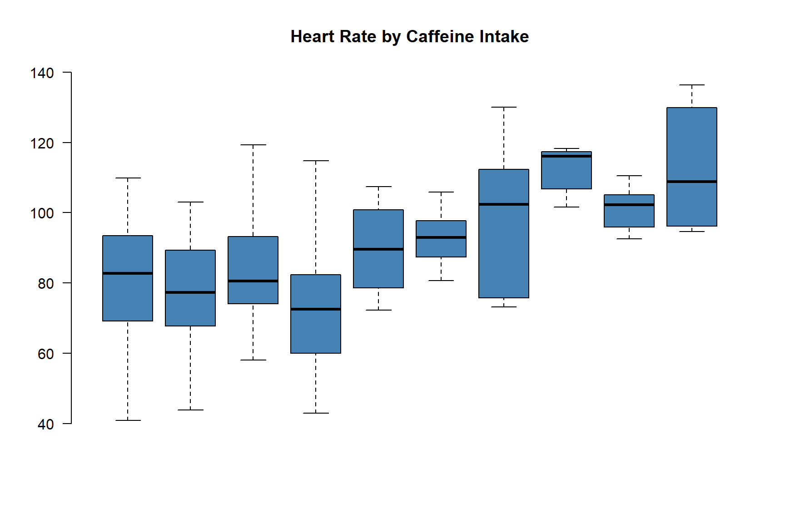

Building a Regression Model
Effect of Caffeine on Heart Rate
# https://www.theodysseyonline.com/caffeine-affect-heart-rate
set.seed( 1234 )
caffeine <- runif( n=100, min=0, max=500 )
heart.rate <- 68 + (9/100)*caffeine + rnorm(100,0,20)
heart.rate[ heart.rate < 40 ] <- mean(heart.rate)
plot( caffeine, heart.rate, bty="n",
pch=19, col=gray(0.5,0.5), cex=1.5 )
McGuyver’s Regression Model
ave.caffeine <- NULL
ave.heart <- NULL
for( i in seq( from=0, to=450, by=50 ) )
{
sub.heart <- heart.rate[ caffeine > i & caffeine < i+50 ]
sub.caffeine <- caffeine[ caffeine > i & caffeine < i+50 ]
ave.heart <- c( ave.heart, mean(sub.heart) )
ave.caffeine <- c( ave.caffeine, mean(c(i,i+50)) )
}
jplot( caffeine, heart.rate, lab1="Caffeine", lab2="Heart Rate",
draw.line=F )
abline( v=seq( from=0, to=500, by=50 ), col="firebrick", lty=3 )
points( ave.caffeine, ave.heart, pch=19, col="firebrick", cex=2, type="b" )
Or alternatively, we could look at box and whisker plots calculated for each group.
caffeine.group <- cut( caffeine, seq( from=0, to=500, by=50 ) )
boxplot( heart.rate ~ caffeine.group,
las=2, frame.plot=F, outline=F, main="Heart Rate by Caffeine Intake",
col="steelblue", xaxt="n" )
The blue line is the average heart rate for the whole sample. This red dots then are what is known asd a conditional mean.
Is this a good model of heart rate, though?
If you tell me the caffeine intake of the subject, I can give you a pretty good guess of their heart rate.
jplot( caffeine, heart.rate, lab1="Caffeine", lab2="Heart Rate",
draw.line=F )
abline( h=mean(heart.rate), col="steelblue", lwd=3 )
abline( v=seq( from=0, to=500, by=50 ), col="firebrick", lty=3 )
points( ave.caffeine, ave.heart, pch=19, col="firebrick", cex=2, type="b" )compare residuals of base model to residuals of conditional mean.
jplot( caffeine, heart.rate, lab1="Caffeine", lab2="Heart Rate",
draw.line=F )
# abline( h=mean(heart.rate), col="steelblue", lwd=3 )
bins <- seq( from=0, to=500, by=50 )
abline( v=seq( from=0, to=500, by=50 ), col="darkgray", lty=3 )
# points( ave.caffeine, ave.heart, pch=19, col="darkgray", cex=2, type="b" )
segments( x0=bins[-length(bins)], x1=bins[-1],
y0=ave.heart, col="darkgray", lwd=3 )
caffeine.group <- cut( caffeine, seq( from=0, to=500, by=50 ) )
d2 <- data.frame( caffeine, heart.rate, caffeine.group )
pred.y <-
d2 %>%
group_by( caffeine.group ) %>%
mutate( mean.hr = mean(heart.rate), residual=heart.rate-mean.hr ) %>%
ungroup()
segments( x0=caffeine, y0=pred.y$mean.hr, y1=pred.y$heart.rate, col="firebrick", lwd=2 )

Regression
Why don’t we just use these groups?
Part of the reason is that when we try to get more granular estimates of the treatment we begin to get noisy data with lots of holes in it as we try to slice the data thinner and thinner.
caffeine.group <- cut( caffeine, seq( from=0, to=500, by=10 ) )
boxplot( heart.rate ~ caffeine.group,
las=2, frame.plot=F, outline=F, main="Heart Rate by Caffeine Intake",
col="steelblue", xaxt="n" )
The more important reason we will discuss in a couple of weeks. That is the ability to add control variables. The regression model gives us a very clear estimate of the “average effect” of one mg of caffeine on heart rate.
| Dependent variable: | |
| heart.rate | |
| caffeine | 0.084*** |
| (0.014) | |
| Constant | 71.470*** |
| (3.503) | |
| Observations | 100 |
| R2 | 0.282 |
| Adjusted R2 | 0.274 |
| Residual Std. Error | 18.755 (df = 98) |
| F Statistic | 38.401*** (df = 1; 98) |
| Note: | p<0.1; p<0.05; p<0.01 |
As you can see, the regression model is another form of the conditional mean. If you tell me the caffeine intake of the subject, I can give you a good guess of their heart rate.
jplot( caffeine, heart.rate, lab1="Caffeine", lab2="Heart Rate",
draw.line=F )
abline( v=seq( from=0, to=500, by=50 ), col="firebrick", lty=3 )
points( ave.caffeine, ave.heart, pch=1, col="black", cex=2, type="b" )
abline( lm( heart.rate ~ caffeine ), col="firebrick", lwd=2 )
b0 <- coefficients( mod )["(Intercept)"]
b1 <- coefficients( mod )["caffeine"]
predicted.heart <- b0 + b1*ave.caffeine
residual <- ave.heart - predicted.heart
data.frame( ave.caffeine, ave.heart, predicted.heart, residual ) %>%
stargazer( summary=F, type="html" )| ave.caffeine | ave.heart | predicted.heart | residual | |
| 1 | 25 | 80.703 | 73.565 | 7.138 |
| 2 | 75 | 75.926 | 77.756 | -1.830 |
| 3 | 125 | 83.979 | 81.947 | 2.032 |
| 4 | 175 | 75.655 | 86.138 | -10.484 |
| 5 | 225 | 89.738 | 90.329 | -0.592 |
| 6 | 275 | 93.221 | 94.520 | -1.299 |
| 7 | 325 | 98.045 | 98.711 | -0.666 |
| 8 | 375 | 115.826 | 102.902 | 12.924 |
| 9 | 425 | 103.480 | 107.093 | -3.613 |
| 10 | 475 | 113.210 | 111.284 | 1.925 |
Examining Fit
jplot( caffeine, heart.rate, lab1="Caffeine", lab2="Heart Rate",
draw.line=F )
abline( lm( heart.rate ~ caffeine ), col="darkgray", lwd=2 )
segments( x0=caffeine, y0=predict(mod), y1=heart.rate, col="firebrick", lwd=2 )
Residual Standard Error
set.seed( 2345 )
heart.rate.control <- 68 + (9/100)*0 + rnorm(100,0,20) # no caffeine
heart.rate.control[ heart.rate.control < 40 ] <- mean(heart.rate.control)
y.hat <- mean(heart.rate.control)d <- density( heart.rate.control ) # returns the density data
plot( d , bty="n", main="Distribution of Resting Heart Rates in Population",
xlab="", yaxt="n", ylab="" )
polygon( d, col=gray(0.5,0.5), border="gray" )
abline( v=mean(heart.rate.control), col="firebrick", lwd=2 )
abline( v=mean(heart.rate.control)+sd(heart.rate.control), col="firebrick", lty=2 )
abline( v=mean(heart.rate.control)-sd(heart.rate.control), col="firebrick", lty=2 )
The Standard Deviation
Standard deviation is the “average” distance from each data point to the mean.
jplot( caffeine, heart.rate.control,
lab1="Caffeine", lab2="Heart Rate",
draw.line=F )
y.hat <- mean(heart.rate.control)
abline( h=y.hat, col="darkgray", lwd=2 )
segments( x0=caffeine, y0=y.hat, y1=heart.rate.control, col="firebrick", lwd=2 )
We use squared deviations for the variance instead of absolute values, but the intuition is the same and the measures will often be close:
## [1] 17.52184## [1] 13.81## [1] 0## [1] 14.77745On average our predicted heart rate was 14.7774456 from the true heart rate.